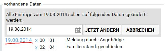

connexia
Betreuungsbeginn
- Bereits einmal bei connexia gemeldete Personen, sollten bei erneutem Betreuungsbeginn mit derselben Adressnummer gemeldet werden. Um dies zu gewährleisten ist es wichtig, den hier beschriebenen Ablauf einzuhalten. Danach ist der Klient in transdok erfasst und es kann mit nachfolgend beschriebenen Schritten fortgefahren werden.
- Programmbereich
VerwaltungMenüpunktKlientenwählen und bei connexia-Stammdaten aufändernklicken. - Die Daten im Formular eingeben, wobei unbedingt die Mitgliedsnummer und Vereinsnummer eingegeben sein muss, sofern Selbstbehalte verrechnet werden. Bei connexia Adressen-Nr nichts eingeben, weil dies beim Datenabgleich automatisch erfolgt.
- Um die Meldungsdaten zu erfassen, muss zuerst ein Datum gewählt werden. Bei Betreuungsbeginn muss dieses Datum mit dem Tag der ersten Leistung übereinstimmen.
- Wird in der Liste ein
Feldgewählt, kann danach derWertgewählt werden. Zum Hinzufügen kann man die Schaltflächehinzufügenklicken oder auf demWertdoppelklicken. Erfasst sind jene Werte, die bei vorhandene Daten stehen. - Erfasste Werte können durch Klicken von
Xgelöscht werden. Auch möglich ist es, nachträglich in der Liste das Datum (rot unterstrichen im Bild unten) für alle Einträge zu diesem Datum zu ändern:

Datenabgleich
Der Datenabgleich erfolgt im Programmbereich connexia beim Menüpunkt Datenabgleich beim Register exportieren. Er hält den Datenbestand zwischen transdok und dem connexia-Programm synchron. Folgende Aspekte sind zu beachten:
- Die Daten sollten möglichst regelmäßig (zumindest alle paar Tage) abgeglichen werden.
- Bei Personen, die in transdok vorhanden sind, dürfen im connexia-Programm keine Änderungen bei den Stammdaten oder Dok-Daten mehr erfolgen. Allerdings dürfen im connexia-Programm weiterhin Leistungen oder GKK-Bestellungen erfasst werden.
- In transdok erfasste Leistungen dürfen nicht am selben Tag für denselben Klient auch im connexia-Programm erfasst werden.
Vorgehen
- Durch das Klicken auf die Schaltfläche
Daten abgleichenwird der Datenbestand zwischen transdok und dem connexia-Programm verglichen. Dabei passieren noch keine Änderungen. - Alle Differenzen werden im Detail angezeigt. Insbesondere bei den Stammdaten sollte der Inhalt beachtet werden. Z.B. sollten keine Namen überschrieben werden oder Adressen nur dann geändert werden, wenn die Person wirklich umgezogen ist, usw.
- Beachten Sie die links angezeigten Fehler und Warnungen. Nur wenn alle Fehler behoben sind, kann weiter abgeglichen werden.
- Durch das Klicken von
ausführenbei den einzelnen Änderungspaketen oderalles ausführenunten links, werden die Änderungen ausgeführt, indem die Daten in das connexia-Programm geschrieben werden. Es kann jederzeit das connexia-Programm geöffnet werden, um nach zu sehen, ob die Daten ergänzt bzw. aktualisiert wurden. - Das Klicken auf die Schaltfläche
Daten abgleichen(die im weiteren Ablauf auchKlientenliste,StammdatenoderLeistungendaten abgleichenheißt) und das Ausführen der Änderungen muss so lange wiederholt werden, bis die Schaltfläche die Beschriftungkeine Daten mehr abzugleichenhat. Sollte dies nicht gelingen, kontaktieren Sie den Support.
Fehlerbehebungen
Angezeigte Fehler werden durch Änderungen der Daten in transdok behoben. Danach muss das zuvor beschriebene Vorgehen zum Datenabgleich wiederholt werden. Nachfolgend einige Hinweise zu bestimmten Fehlerbehebungen:
- Keine Leistung am Betreuungsbeginn: Das Datum der Meldungsdaten (Programmbereich
VerwaltungMenüpunktKlientenwählen und bei connexia-Stammdaten aufändernklicken) muss mit dem Tag der ersten Leistung übereinstimmen. Entweder muss hier das Datum auf den Tag der ersten Leitung geändert werden (Datum anklicken und ändern) oder es muss für dieses Datum eine Leistung erfasst werden (z.B. 01 und 15). - Leistung liegt außerhalb des Betreuungszeitraums: Für diesen Fehler gilt dasselbe wie für den zuvor beschriebenen Fehler. Auch das Vorgehen zur Lösung ist dasselbe.
- Leistung unvollständig: Leistungen können auch für andere MitarbeiterInnen korrigiert werden. Dazu beim Programmbereich
connexiaden MenüpunktBearbeitenwählen, sowie MitarbeiterIn und Datum auswählen. Durch das Klicken der Änderungsschaltfläche, kann ein Eintrag korrigiert werden. - ungültige Beratungsleistungen: Die Leistungen 31 bis 34 dürfen nur beim ‘Klient’ mit der Bezeichnung ‘Beratung’ verwendet werden. Bei Beratungen von erfassten Personen, muss z.B. 01 und 15 verwendet werden. Korrigiert werden die falschen Leistungen wie beim zuvor beschriebenen Fehler, indem die Anzahl auf 0 gesetzt wird und die entsprechende MitarbeiterIn die Dokumentation nachholt.
- Die Einträge sind nicht kumuliert: Dieser Fehler bedeutet, dass für denselben Klient am selben Tag im connexia-Programm und in transdok dieselben Leistungen erfasst wurden. Er wird korrigiert, indem im connexia-Programm die doppelten Einträge (immer beide!) gelöscht werden und die Daten in transdok neue abgeglichen werden. Um sicher alle Leistungen wieder zu übertragen, wird hierfür beim Programmbereich
connexiabeim MenüpunktDatenabgleichdie Schaltflächealle Leistungen der letzten 40 Tage prüfenverwendet. - ungültige Pflegernummer: Eine MitarbeiterIn hat keine connexia-Pflegernummer eingetragen. Im Programmbereich
connexiaden MenüpunktMitarbeiterwählen, sowie die entsprechende Person in der Liste auswählen und die Nummer eingeben. Es ist dieselbe Nummer (ohne Minuszeichen) mit der die Person auch ins connexia-Programm einsteigen kann. Auch dort sollte die Person beiSystemverwaltung>Pflegepersonaleintragen sein.
monatliche Meldung
- Programmbereich
connexiaMenüpunktDatenabgleichRegisterexportieren - Der zuvor beschriebene Datenabgleich muss vollständig ausgeführt sein, so dass die Schaltfläche
Daten abgleichenmitkeine Daten mehr abzugleichenbeschriftet ist. - Die Schaltfläche
alle Stammdaten abgleichenklicken und die Änderungen ausführen, bis keine Änderungen mehr angezeigt werden. - Die Schaltfläche
alle Leistungen der letzten 40 Tage prüfenklicken und die Änderungen ausführen, bis keine Änderungen mehr angezeigt werden. - Die Schaltfläche
mit comille prüfenklicken. Damit öffnet sich ein Prüfprogramm, das die Daten durch Klicken vonjetzt überprüfendirekt im connexia-Programm prüft. Die angezeigten Fehler müssen in transdok behoben werden und die Daten erneut abgeglichen. Wurde eine Person noch nicht ins transdok importiert oder die Leistungen im connexia-Programm erfasst, müssen die Fehler im connexia-Programm behoben werden. Danach wird erneut die Schaltflächejetzt überprüfengeklickt. Erst wenn keine Fehler mehr angezeigt werden, darf mit den nächsten Schritten fortgefahren werden. Sollte dies nicht gelingen, kontaktieren Sie den Support. - Das connexia-Programm öffnen, einloggen und
Systemverwaltung>Datenträger connexiaklicken. Das Datum beiAuswahl bisauf den letzten Tag des zu meldenden Monats setzen undDatenträger vorbereitenklicken. Achten Sie auf die in der darunterstehenden Tabelle neu eingetragene oberste Zeile. Vor allem die Anzahl in der SpalteLSTsollte jeden Monat in etwa dieselbe sein. Durch Klicken vonzurückkann das Programm wieder verlassen werden. - Das GNV-Programm starten und die Einträge senden. Damit werden die Daten an connexia übermittelt.
Betreuungsende
- Programmbereich
VerwaltungMenüpunktKlientenwählen und bei connexia-Stammdaten aufändernklicken. - Das Datum vom Betreuungsende wählen und das
FeldEnde der Pflege wegen mit dem entsprechendenWertdurch Doppelklicken oderhinzufügenerfassen. - Zusätzlich wird der Klient ins Archiv verschoben. Lesen Sie hier mehr dazu.
Leistungen nach Betreuungsende
Leistungen dürfen auch nach Betreuungsende noch erfasst werden. Sie werden beim Datenabgleich auch dann berücksichtigt, wenn die Person bereits ins Archiv verschoben wurde.